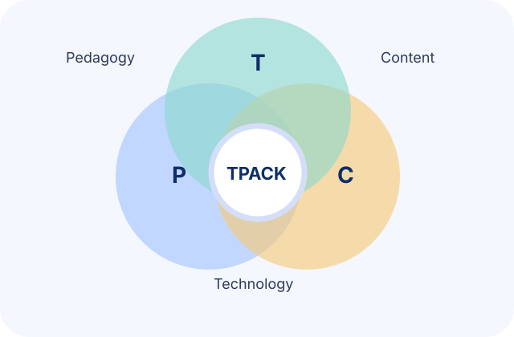
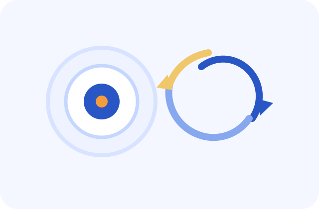
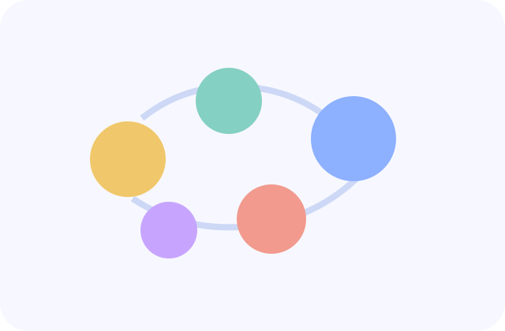

Universal Design for Learning
Builds multiple means of engagement, representation, and expression into instruction so learner variability is expected rather than treated as an exception.
I approach teaching as an act of intentional design. Every course, lesson, and interaction becomes an opportunity to create the conditions under which diverse learners can build understanding, develop agency, and apply knowledge in authentic settings.
Doctoral training and instructional practice helped me move from technology integration as a tool choice toward a fuller view of teaching as evidence-based orchestration of cognition, motivation, and participation.
That philosophy now shapes how I scaffold learning, interpret data, offer feedback, and select technology only when it genuinely improves access, clarity, engagement, or transfer.
My ongoing Arts-Integrated GenAI Literacy Development Program with pre-service teachers extends this orientation. Across music and theater modules, participants build prompt engineering, AI feedback evaluation, and AI ethics literacy by creating real artistic work, modeling the evidence-informed, learner-centered design I want to see in their future classrooms.
These pillars shape how I design activities, structure support, evaluate learning, and decide when technology meaningfully belongs in the instructional environment.
Builds multiple means of engagement, representation, and expression into instruction so learner variability is expected rather than treated as an exception.

Positions technology decisions inside the relationship among pedagogy, disciplinary content, and the realities of a teaching context.
Supports active sensemaking, modeling, guided practice, and collaborative knowledge building around meaningful problems.

Starts with learning outcomes and assessment evidence, then structures instruction systematically to make those outcomes achievable.

Centers identity, relevance, and belonging so learners can connect disciplinary work to their own experiences and futures.
Uses formative evidence, interaction data, and reflective assessment to improve instruction while learning is still happening.
The sections below preserve the intent of the original long-form teaching statement while making it easier to navigate.
My teaching philosophy emerged through practice across multiple institutional and cultural settings. I began by teaching mathematics in Nigeria, where I learned quickly that engagement rises when instruction feels meaningful, active, and connected to learners' realities.
Doctoral study in instructional technology gave me conceptual language for instincts I had already developed: learning is designed, participation is structured, and good teaching is iterative, reflective, and evidence-informed.
I teach with the assumption that learners differ in prior knowledge, confidence, pace, digital access, and preferred ways of demonstrating understanding.
That belief leads me to design with choice, multimodal materials, scaffolded tasks, and feedback loops so students can enter learning productively and keep moving forward.
I see the teacher as more than a presenter of content. The teacher is a designer of environments, a facilitator of inquiry, and a professional who studies how learners respond to the conditions that have been created.
That stance matters especially in technology-rich contexts, where novelty can distract from learning unless design choices stay anchored to outcomes, evidence, and care for the learner experience.
I do not treat technology as an end in itself. I use it when it makes learning more accessible, more authentic, more collaborative, or more analyzable in ways that improve teaching and learning.
Reflection is essential to that process. After every teaching cycle, I look for evidence about where students struggled, where engagement dropped, and where design revisions can better support equity and transfer.
Co-designed and delivered as an undergraduate course at the University of Alabama (CIE 499-910), integrating applied AI, ethics, and workforce-readiness competencies.

These entries come directly from the CV and show how teaching practice developed across different responsibilities and contexts.
Undergraduate, The University of Alabama
Co-designed and taught an undergraduate course on applied AI, ethics, and workforce readiness for approximately 30 students. Designed and evaluated scaffolded, project-based...
Online (UA Blackboard), pre-service music and theater teachers
Co-designed and delivered a fully online course of two modules and eight hands-on lessons building computational thinking, prompt engineering, problem solving with AI,...
Graduate, The University of Alabama. Mentored graduate teaching; Dr. Feiya Luo, instructor of record
Supported a fully online graduate design studio, observing and assisting with course components and co-evaluating five assignment sets, including both instructional-design case...
Model Secondary School, Federal University of Technology, Minna, Nigeria
Taught mathematics and further mathematics; redesigned instruction around student reasoning, and a tutored senior-secondary cohort reached a 90% pass rate. Developed...
Abarikpo Community Secondary School, Ahoada, Rivers State, Nigeria
Taught secondary mathematics, designed quizzes and examinations, and provided targeted tutoring in mathematics and further mathematics.
Guest Lecture, Introduction to Immersive Virtual Reality in Facilitating Multimedia Learning, AIL 605, The University of Alabama
Workshop, Behavioral and Microgenetic Analysis (designed and led for faculty and graduate researchers), The University of Alabama
Workshop Facilitator, Balancing Teaching Responsibilities with Academic and Research Commitments, Graduate Teaching Assistant breakout series, The University of Alabama
Guest Lecture and Recorded Interview, Instructional Design Strategies, Pepperdine University (recorded and embedded as a permanent course asset)
Recent training supports my work in instructional design, AI, multimedia development, and course quality improvement.
2026
2026
2025
2023
2016